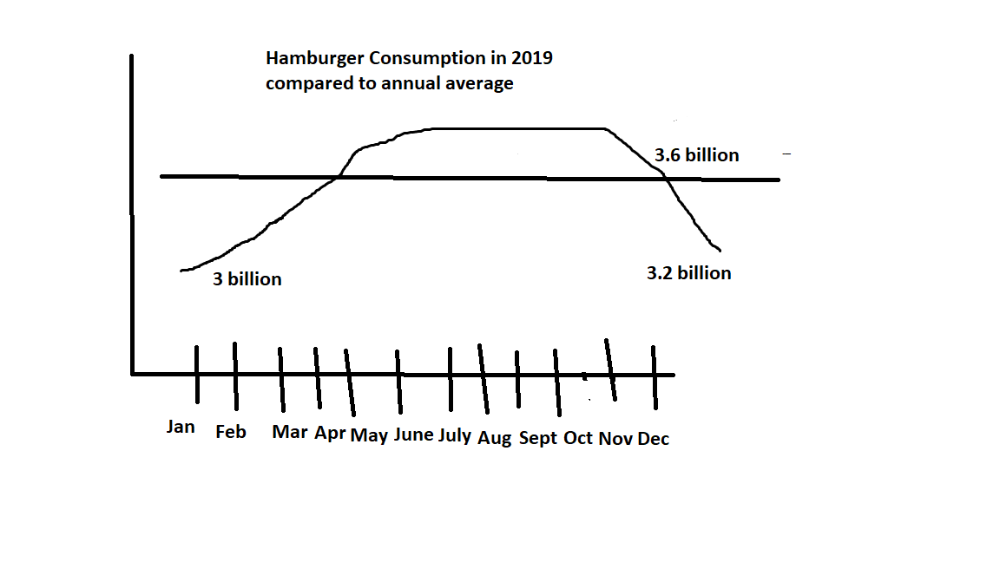

Chapter 7 is focused on distributions and measures of central tendencies such as the mode, median, and mean. However, chapter 8 focuses on revealing and analyzing the change in a given distribution. Also, while chapter 7 concentrates on finding certain points and values within a distribution, chapter 8 discusses the most effective ways to display change within data in comparison to another period of time.
| Seasonal Subseries Chart | Logarithmic Scale | Indexes |
|---|---|---|
| Pro: can compare a certain period of time’s performance to another (different seasons) | Pro: can transform it into a log transformation and demonstrate it in a tenfold increase rather than 1 to visualize the change in a clearer and more efficient manner | Pro: able to break down the data into smaller portions to show relationships and to more easily make observations |
| Con: the time period (or seasons) must be known in order to create this kind of chart and a poorly designed one can be misleading (especially if it leaves gaps or does not display enough in the detail) | Con: does not give a clear visual of overall change when using large numbers with exponentials | Con: can become overwhelming to look at as it can easily become cluttered when using the zero-based index |

This example of a seasonal chart is one that would be more effective if it demonstrated the change of hamburger consumption in comparison to past years. Furthermore, it would be better if it compared it to past years and took into account the outdoor temperature, amount of rain, and population of the US. Given only this visualization, it does not speak to what might have influenced the change of hamburger consumption. Not to mention, it would make sense that the consumption would increase over the summer, so this is not suprise. In order to make it a bit more insightful, it would be nice to have other factors displayed as well.
This visualization is more effective than the last because it does not leave gaps between the months. It also takes into consideration the annual average for the year, so people are able to compare the current consumption to the average.